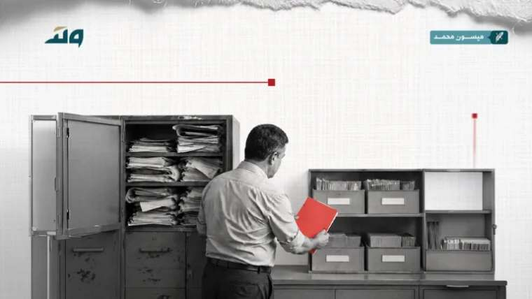

سياسة — تحليل
عندما ترث الدولة اعباء الماضي: كيف تصلح القطاع العام دون تضحية بالموظف
القطاع العام السوري ليس جدولا في ميزانية، بل طبقة اجتماعية ولدت داخل الدولة القديمة وتنتظر مكانها في الدولة الجديدة. اي اصلاح يبدا من الرقم ولا يبدا من الانسان سينتج ازمة ثانية قبل ان ينهي الاولى.